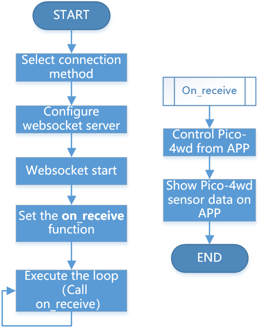

Note
Hello, welcome to the SunFounder Raspberry Pi & Arduino & ESP32 Enthusiasts Community on Facebook! Dive deeper into Raspberry Pi, Arduino, and ESP32 with fellow enthusiasts.
Why Join?
Expert Support: Solve post-sale issues and technical challenges with help from our community and team.
Learn & Share: Exchange tips and tutorials to enhance your skills.
Exclusive Previews: Get early access to new product announcements and sneak peeks.
Special Discounts: Enjoy exclusive discounts on our newest products.
Festive Promotions and Giveaways: Take part in giveaways and holiday promotions.
👉 Ready to explore and create with us? Click [here] and join today!
1.2 How ws_test.py Works?¶
The communication between Pico and Sunfounder Controller is based on the websocket protocol.
The specific workflow of APP Control gameplay is as follows:

from ws import WS_Server
import json
import time
NAME = 'my_esp8266'
## Client Mode
# WIFI_MODE = "sta"
# SSID = "YOUR SSID HERE"
# PASSWORD = "YOUR PASSWORD HERE"
## AP Mode
WIFI_MODE = "ap"
SSID = ""
PASSWORD = "12345678"
ws = WS_Server(name=NAME, mode=WIFI_MODE, ssid=SSID, password=PASSWORD)
ws.start()
led = machine.PWM(machine.Pin(15))
led.freq(1000)
potentiometer = machine.ADC(28)
def on_receive(data):
print(data)
# output
value = data['H']
led.duty_u16(value*655)
# input
value=potentiometer.read_u16()
ws.send_dict['G'] = value
ws.on_receive = on_receive
def main():
print("start")
while True:
ws.loop()
main()
This code constitutes the basic framework of APP control. Here, you need to pay attention to the following two parts:
Setup websocket
There are two connection mode between Sunfounder Controller and Pico: One is AP mode, the other is STA mode.
AP Mode: You need to connect Sunfounder Contorller to the hotspot released by pico.
STA Mode: You need to connect Sunfounder Controller and pico to the same LAN.
The default connection mode is AP Mode: The Pico releases the hotspot (the Wifi name is
NAMEin the code, here ismy_esp8266), the mobile phone (tablet) is connected to this WLAN. This mode allows you to remotely control pico in any situation, but will make your phone (tablet) temporarily unable to connect to the Internet.NAME = 'my_esp8266' ## Client Mode # WIFI_MODE = "sta" # SSID = "YOUR SSID HERE" # PASSWORD = "YOUR PASSWORD HERE" ## AP Mode WIFI_MODE = "ap" SSID = "" PASSWORD = "12345678" ws = WS_Server(name=NAME, mode=WIFI_MODE, ssid=SSID, password=PASSWORD) ws.start()
You can also use STA mode: Let the pico connects to your home WLAN, and your mobile phone (tablet) should also be connected to the same WLAN.
This mode is opposite to the AP mode and will not affect the normal use of the mobile phone (tablet), but will limit your pico from leaving the WLAN radiation range.
The way to start this mode is to comment out the three lines under
## AP Mode, uncomment the three lines under## Client Mode, and change theSSIDandPASSWORDto your home WIFI at the same time.NAME = 'my_esp8266' ## Client Mode WIFI_MODE = "sta" SSID = "YOUR SSID HERE" PASSWORD = "YOUR PASSWORD HERE" ## AP Mode # WIFI_MODE = "ap" # SSID = "" # PASSWORD = "12345678" ws = WS_Server(name=NAME, mode=WIFI_MODE, ssid=SSID, password=PASSWORD) ws.start()
After completing the connection mode settings, Websocket will set up and start the server.
ws = WS_Server(name=NAME, mode=WIFI_MODE, ssid=SSID, password=PASSWORD) ws.start()
Responding
The specific operation code of Pico and Sunfounder Controller is written on the
on_receive()function. Usually, we need to write the codes for APP to control Pico on the front and the codes for APP to show Pico sensor data on the back.def on_receive(data): print(data) # output value = data['H'] led.duty_u16(value*655) # input value=potentiometer.read_u16() ws.send_dict['G'] = value ws.on_receive = on_receive
Finally,
on_receive()will be assigned tows.on_receiveand then called byws.loop.